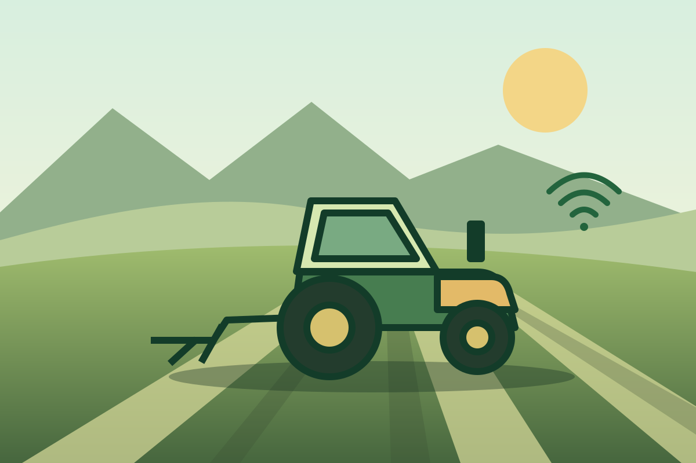

MECANIZACIÓN · NIVEL INICIAL A INTERMEDIO
Maquinaria agrícola: del suelo a la cosecha
Aprende qué equipo usar desde la preparación del suelo hasta la cosecha. Compara herramientas históricas, maquinaria convencional y tecnologías documentadas en 2026.

Lo que podrás hacer
- Selecciona equipos, acoples y capacidad por labor.
- Calcula dosis, rendimiento de campo y pérdidas.
- Compara equipos históricos, convencionales y funciones documentadas en 2026.
Programa de doce temas
- Historia y selección por labor
- Tractor, acoples y seguridad
- Labranza primaria y compactación
- Cama de siembra, residuos y nivelación
- Sembradoras, plantadoras y trasplantadoras
- Fertilización sólida y dosificación variable
- Pulverización, calibración y deriva
- Escarda, guiado GNSS y trabajo entre hileras
- Forrajes y cosechas especializadas
- Cosechadora combinada y pérdidas de grano
- Drones, telemetría y control remoto
- Costos, mantención y plan de mecanización
Para quién es
Estudiantes, productores y equipos de campo. Los ejercicios usan datos simulados y una calculadora. Para operar maquinaria se requiere capacitación práctica y seguir el manual.
Muestra gratuita
Revisa seis diapositivas del primer tema y resuelve un ejercicio de capacidad de trabajo.
Abrir muestra →Drones y control remoto
Aprende a elegir sensores RGB, multiespectrales o térmicos, interpretar un ortomosaico y verificar resultados en terreno. Compara telemetría, asistencia remota, teleoperación y autonomía supervisada. El bloque de aplicación aérea incluye referencias de DGAC y SAG para Chile.
Evaluación y certificados
Completa las doce lecciones y responde correctamente al menos 21 de 30 preguntas para habilitar tus certificados de participación y aprobación de CAMPO EDUCA.
Encargado del curso
José Ignacio Farías · Ingeniero Agrícola
Lecturas técnicas
- FAO · Evolución de la mecanización agrícola
- INIA · Manual de agricultura de precisión
- OSHA · Seguridad agrícola y protecciones
- Iowa State University · Capacidad efectiva de campo
- SAG · Etiquetas autorizadas y fichas de seguridad
- John Deere · Automatización de cosechadoras año modelo 2026
- Fendt · PTx OutRun y automatización, septiembre de 2026